Example Results for a Single Trajectory¶
If we use the data from 2mom_wcb/traj_t000000_p001.nc_wcb for the
trajectory with index 0 and , we get data from within
a region that satisfies the WCB-criterion (see Section 2.3 of Oertel2019).
One can execute the simulation with the following command, executed at the
root folder of the repository:
build/apps/src/microphysics/./trajectories \
-a 3 \
-t 0 \
-s 1 \
-f 93000 \
-d 0.01 \
-i 250 \
-b 1.0 \
-o data/wcb_sim \
-l 2mom_wcb/traj_t000000_p001.nc_wcb \
-r 0
See the section on Executing_ for a description of these commands. In short, we are resetting variables such as temperature, saturation, pressure and ascent every , the timestep size of the netCDF file. Those variables, except for ascent, are not fixed while calculating the microphysics. The timestep for the microphysics is . We capture the results and derivatives every 250 timesteps (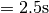).
We can plot all the following plots with:
Let’s take a look at the ice mixing ratio :
Ice mixing ratio derivatives with the highest impact. The colored background stands for timesteps where the WCB-criterion is satisfied.¶
We can see that the minimum size for ice particles has an impact of 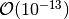. The derivative can vary from negative to positive within few seconds.
Ice mixing ratio derivatives with the second highest impact. The colored background stands for timesteps where the WCB-criterion is satisfied.¶
The parameters with the second highest impact of 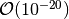 have largely negative derivatives. 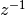 is the inverse height size of the air parcel, which is set to for this simulation. The minimum size of a cloud particle is present as well. is a parameter for the vertical velocity of ice particles:
where  is the particle (mean) mass in kg and is
another particle model constant. Those and
are defined for every particle type separately. This particular
is used in the ice self collection (see Cotton1986 or Straka1989 page 53 for
temperature dependency).
The collection of ice crystals after Seifert2006 Eq. 62 is implemented as follows:
is the particle (mean) mass in kg and is
another particle model constant. Those and
are defined for every particle type separately. This particular
is used in the ice self collection (see Cotton1986 or Straka1989 page 53 for
temperature dependency).
The collection of ice crystals after Seifert2006 Eq. 62 is implemented as follows:
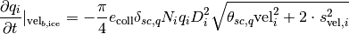
with 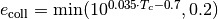
the mean efficiency, 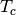 is the temperature in degree Celcius, 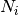
is the amount of ice particles and 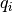 the ice mixing ratio.
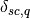 and 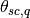 are dimensionless constants
(depending on chosen size distributions and velocity- and diameter-mass relations
of the colliding particles).
is the mean particle diameter, which is calculated with the mean
particle mass and some model constants:
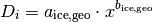
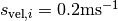 is the constant variance of the particle velocity.
The parameter and are used in the sedimentation process:
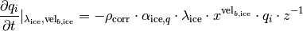
where is
used for density correction.
The air density is set to 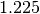, the exponent
is set to . The density of dry air 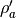 can be calculated
using pressure, temperature  , saturation
, saturation  and
the gas constant for dry air 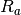 via
and
the gas constant for dry air 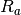 via
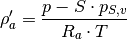
The saturation vapor pressure 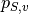 can be calculated with Murphy2005.
- Oertel2019
Oertel, A., Boettcher, M., Joos, H., Sprenger, M., and Wernli, H., “Potential vorticity structure of embedded convection in a warm conveyor belt and its relevance for the large-scale dynamics”, Weather Clim. Dynam. Discuss., https://doi.org/10.5194/wcd-2019-3, in review, 2019.
- Cotton1986
F. Mimouni, J. L. Ballard, E. T. Ballard, and R. T. Cotton, “Necrotizing Tracheobronchitis: Case Report,” Pediatrics, vol. 77, no. 3, p. 366, Mar. 1986.
- Straka1989
J. M. Straka, “Hail growth in a highly glaciated central High Plains multi-cellular hailstorm,” Ph.D.Diss., University of Wisconsin, Madison, 1989.
- Seifert2006
A. Seifert and K. D. Beheng, “A two-moment cloud microphysics parameterization for mixed-phase clouds. Part 1: Model description,” Meteorol. Atmos. Phys., vol. 92, no. 1, pp. 45–66, Feb. 2006, doi: 10.1007/s00703-005-0112-4.
- Murphy2005
D. M. Murphy and T. Koop, “Review of the vapour pressures of ice and supercooled water for atmospheric applications,” Quarterly Journal of the Royal Meteorological Society, vol. 131, no. 608, pp. 1539–1565, 2005, doi: 10.1256/qj.04.94.